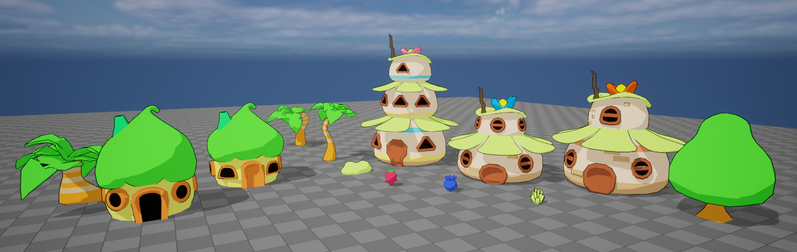
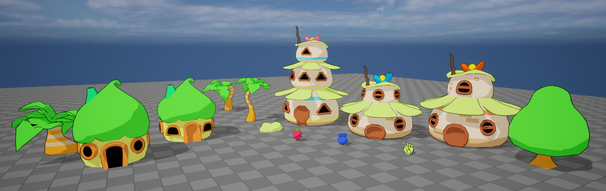

Made by Robin.
FruityWars.
This project was made togheter in a group of 10 people as our GP3 project at FutureGames the project was made in 7 weeks and was made in Unreal Engine and we used the source controll Perforce.
After completing this project the game was published on Steam 2024-06-15.
Goals
Click Here
1. Efficiently work in a larger group project.
2. Use C++ in Unreal Engine

Parabolic-Function based throwing -> Tldr
Using a parbolic function calculate the path that the projectile should take when travelling towards the target point.
y = a(x - h)^2 + k
Throwing Projectile | Code
Click Here
//Functions to handle aiming.
void UPlayerThrowComponent::Aim()
{
ChangeCameraState(true);
bIsAiming = true;
}
void UPlayerThrowComponent::StopAim()
{
if (bReleaseToShoot)
SpawnAndFollowProjectile(TrajectoryPoints);
ChangeCameraState(false);
ClearTrajectoryMeshes();
bIsAiming = false;
}
//Main throw function.
void UPlayerThrowComponent::Throw()
{
UUUnitHandler* UnitHandlerRef = Cast(GetOwner()->GetComponentByClass(UUUnitHandler::StaticClass()));
if(UnitHandlerRef == nullptr)
{
GEngine->AddOnScreenDebugMessage(-1, 2.0f, FColor::Red, TEXT("UnitHandler is null"));
return;
}
if (UnitHandlerRef->CurrentUnits <= 0)
{
GEngine->AddOnScreenDebugMessage(-1, 2.0f, FColor::Red, TEXT("No units to throw"));
return;
}
if (!bReleaseToShoot && bIsAiming && bRayHit)
{
SpawnAndFollowProjectile(TrajectoryPoints);
UnitHandlerRef->CurrentUnits--;
}
}
//Calls Debugs and Raycast.
void UPlayerThrowComponent::TickComponent(float DeltaTime, ELevelTick TickType, FActorComponentTickFunction* ThisTickFunction)
{
Super::TickComponent(DeltaTime, TickType, ThisTickFunction);
if (GEngine)
{
FColor DebugColor = bIsAiming ? FColor::Green : FColor::Red;
DrawDebugString(GetWorld(), FVector(0, 0, 100), bIsAiming ? "Aiming" : "Not Aiming", GetOwner(), DebugColor, 0.1f * DeltaTime);
DrawDebugString(GetWorld(), FVector(0, 0, 120), bReleaseToShoot ? "Release to shoot" : "Hold & left click to shoot", GetOwner(), FColor::White, 0.1f * DeltaTime);
DrawDebugString(GetWorld(), FVector(0, 0, 140), FString::Printf(TEXT("Throw Multiplier: %f"), ThrowMultiplier), GetOwner(), FColor::White, 0.1f * DeltaTime);
DrawDebugString(GetWorld(), FVector(0, 0, 160), FString::Printf(TEXT("Range Multiplier: %f"), ThrowRange), GetOwner(), FColor::White, 0.1f * DeltaTime);
}
if (bIsAiming)
{
Ray();
if (TrajectoryPoints.Num() > 0)
{
UpdateTrajectoryMaterials();
UpdateTrajectoryMeshes(TrajectoryPoints);
}
}
}
//Raycast from the player to the mouse position, also calculate player and camera distance
void UPlayerThrowComponent::Ray()
{
FVector2D MousePosition;
APlayerController* PlayerControllerRef = UGameplayStatics::GetPlayerController(GetWorld(), 0);
if (!PlayerControllerRef || !PlayerControllerRef->GetMousePosition(MousePosition.X, MousePosition.Y))
{
return;
}
FVector WorldLocation, WorldDirection;
if (!UGameplayStatics::DeprojectScreenToWorld(PlayerControllerRef, MousePosition, WorldLocation, WorldDirection))
{
return;
}
APlayerCameraManager* PlayerCamera = GetWorld()->GetFirstPlayerController()->PlayerCameraManager;
if (!PlayerCamera)
{
return;
}
FVector CameraLocation = PlayerCamera->GetCameraLocation();
float PlayerAndCameraDistance = FVector::Distance(PlayerControllerRef->GetPawn()->GetActorLocation(), CameraLocation);
FVector Start = WorldLocation;
FVector End = Start + WorldDirection * (ThrowRange + PlayerAndCameraDistance);
DrawDebugSphere(GetWorld(), GetOwner()->GetActorLocation(), ThrowRange, 8, FColor::Red, false, -1.f, 0);
FHitResult Hit;
TArray ActorsToIgnore = { GetOwner() };
TArray> ObjectTypes = {
UEngineTypes::ConvertToObjectType(ECC_WorldStatic),
UEngineTypes::ConvertToObjectType(ECC_Pawn)
};
bool ActorHit = UKismetSystemLibrary::LineTraceSingleForObjects(GetWorld(), Start, End, ObjectTypes, false, ActorsToIgnore, EDrawDebugTrace::None, Hit, true, FLinearColor::Red, FLinearColor::Green, 0.05f);
bRayHit = ActorHit;
if (ActorHit && Hit.GetActor())
{
float ThrowHeight = FVector::Distance(PlayerControllerRef->GetPawn()->GetActorLocation(), Hit.ImpactPoint) / 2 * ThrowMultiplier;
DrawThrowCurve(PlayerControllerRef->GetPawn()->GetActorLocation(), Hit.ImpactPoint, ThrowHeight, SmoothnessOfCurve, FColor::Green);
}
else
{
// If the ray doesn't hit anything, draw the curve to the end of the throw range
FVector MousePosAtEdge = Start + WorldDirection * ThrowRange;
float ThrowHeight = FVector::Distance(PlayerControllerRef->GetPawn()->GetActorLocation(), MousePosAtEdge) / 2 * ThrowMultiplier;
DrawThrowCurve(PlayerControllerRef->GetPawn()->GetActorLocation(), MousePosAtEdge, ThrowHeight, SmoothnessOfCurve, FColor::Red);
}
}
//Draw the throw curve.
void UPlayerThrowComponent::DrawThrowCurve(const FVector& StartPoint, const FVector& EndPoint, float HeightOffset, int32 NumPoints, FColor Color)
{
if (NumPoints < 2) return;
TArray NewTrajectoryPoints;
NewTrajectoryPoints.Reserve(NumPoints);
NewTrajectoryPoints.Add(StartPoint);
float HeightOffset4 = 4.0f * HeightOffset;
for (int32 i = 1; i < NumPoints - 1; ++i)
{
// Calculate t parameter between 0 and 1
float t = static_cast(i) / (NumPoints - 1);
// Calculate the point on the line between StartPoint and EndPoint
FVector Point = FMath::Lerp(StartPoint, EndPoint, t);
// Calculate the parabolic height offset
float ParabolicHeight = FMath::Square(t - 0.5f) * HeightOffset4 - HeightOffset;
// Adjust the Z component of the point to create the curve
Point.Z -= ParabolicHeight;
NewTrajectoryPoints.Add(Point);
}
NewTrajectoryPoints.Add(EndPoint);
TrajectoryPoints = MoveTemp(NewTrajectoryPoints);
}
//Update the trajectory materials
void UPlayerThrowComponent::UpdateTrajectoryMaterials()
{
if(GEngine && !CanShootMaterial && !CannotShootMaterial)
{
GEngine->AddOnScreenDebugMessage(-1, 2.0f, FColor::Red, TEXT("Missing CanShootMaterial in the ThrowComponent"));
return;
}
UMaterial* SelectedMaterial = bRayHit ? CanShootMaterial : CannotShootMaterial;
for (UStaticMeshComponent* MeshComponent : TrajectoryMeshes)
{
if (MeshComponent)
{
MeshComponent->SetMaterial(0, SelectedMaterial);
}
}
}
//Update the trajectory meshes
void UPlayerThrowComponent::UpdateTrajectoryMeshes(const TArray& Points)
{
float SegmentSize = 1.0f / FMath::Max(1, Points.Num());
for (int32 i = 0; i < Points.Num(); ++i)
{
float NormalizedIndex = (i + 1) * SegmentSize;
float ScaleValue = 0.1f;
if (SizeCurve)
{
ScaleValue = SizeCurve->GetFloatValue(NormalizedIndex);
}
if (i < TrajectoryMeshes.Num())
{
TrajectoryMeshes[i]->SetWorldLocation(Points[i]);
TrajectoryMeshes[i]->SetWorldScale3D(FVector(ScaleValue));
TrajectoryMeshes[i]->SetVisibility(true);
}
else
{
UStaticMeshComponent* MeshComponent = NewObject(this);
MeshComponent->RegisterComponent();
MeshComponent->AttachToComponent(GetOwner()->GetRootComponent(), FAttachmentTransformRules::KeepRelativeTransform);
MeshComponent->SetStaticMesh(LineMesh);
MeshComponent->SetWorldLocation(Points[i]);
MeshComponent->SetWorldScale3D(FVector(ScaleValue));
MeshComponent->SetVisibility(true);
TrajectoryMeshes.Add(MeshComponent);
}
}
for (int32 i = Points.Num(); i < TrajectoryMeshes.Num(); ++i)
{
TrajectoryMeshes[i]->SetVisibility(false);
}
}
//Clear the trajectory meshes.
void UPlayerThrowComponent::ClearTrajectoryMeshes()
{
for (UStaticMeshComponent* MeshComponent : TrajectoryMeshes)
{
MeshComponent->DestroyComponent();
}
TrajectoryMeshes.Empty();
}
//Spawn the projectile and set the trajectory points.
void UPlayerThrowComponent::SpawnAndFollowProjectile(const TArray& _TrajectoryPoints)
{
if (ProjectileClass == nullptr && GEngine)
{
GEngine->AddOnScreenDebugMessage(-1, 2.0f, FColor::Red, TEXT("Missing projectile to spawn"));
return;
}
if (GetWorld())
{
AAProjectile* AProjectile = GetWorld()->SpawnActor(ProjectileClass, TrajectoryPoints[1], FRotator::ZeroRotator);
AProjectile->SetTrajectoryPoints(_TrajectoryPoints);
if (UnitToSpawn != nullptr)
{
AProjectile->ToSpawnClass = UnitToSpawn;
}
else if(GEngine)
{
GEngine->AddOnScreenDebugMessage(-1, 2.0f, FColor::Red, TEXT("Missing troop to spawn in the ThrowComponent"));
}
}
}

Key that opens doors -> Tldr
A key when the player is close will start following the player and when the player gets close to the door will open the door.
Key | Code
Click Here
void AAKey::BeginPlay()
{
Super::BeginPlay();
if (DoorsInScene.Num() == 0)
{
TArray TempActors;
UGameplayStatics::GetAllActorsOfClass(GetWorld(), AAGate::StaticClass(), TempActors);
for(AActor* Actor : TempActors)
{
AAGate* Gate = Cast(Actor);
if(Gate)
{
DoorsInScene.Add(Gate);
}
}
}
if (DoorsInScene.Num() == 0)
GEngine->AddOnScreenDebugMessage(-1, 5.f, FColor::Red, TEXT("No Door Found In Scene"));
}
void AAKey::Tick(float DeltaTime)
{
Super::Tick(DeltaTime);
switch (EState)
{
case KeyState::Idle:
PickUp();
break;
case KeyState::FollowingPlayer:
FollowPlayer();
break;
case KeyState::OpeningDoor:
OpenDoor();
break;
}
if (GEngine)
{
DrawDebugSphere(GetWorld(), GetActorLocation(), DetectionRange, 20, FColor::Red, false, 0.f, 0, .5f);
DrawDebugString(GetWorld(), GetActorLocation(), UEnum::GetValueAsString(EState), nullptr, FColor::Red, 0.1f * DeltaTime, true);
}
}
void AAKey::PickUp()
{
FVector PlayerLocation = GetWorld()->GetFirstPlayerController()->GetPawn()->GetActorLocation();
FVector KeyLocation = GetActorLocation();
float Distance = FVector::Dist(PlayerLocation, KeyLocation);
if (Distance < DetectionRange)
{
EState = KeyState::FollowingPlayer;
}
}
void AAKey::FollowPlayer()
{
FVector KeyLocation = GetActorLocation();
FVector PlayerLocation = GetWorld()->GetFirstPlayerController()->GetPawn()->GetActorLocation();
MoveAndRotateTowards(KeyLocation, PlayerLocation, Speed, MinDistance);
if (DoorsInScene.Num() > 0)
{
for (int i = 0; i < DoorsInScene.Num(); i++)
{
FVector DoorLocation = DoorsInScene[i]->GetActorLocation();
if (FVector::Dist(KeyLocation, DoorLocation) < DetectionRange)
{
DoorToOpen = DoorsInScene[i];
EState = KeyState::OpeningDoor;
}
}
}
}
void AAKey::OpenDoor()
{
if (DoorToOpen == nullptr)
return;
FVector CurrentLocation = GetActorLocation();
FVector DoorLocation = DoorToOpen->GetActorLocation();
FVector LockLocation = DoorLocation + DoorToOpen->GetActorRightVector() * 100;
float DeltaTime = GetWorld()->GetDeltaSeconds();
FVector NewLocation = FMath::Lerp(CurrentLocation, LockLocation, Speed * DeltaTime);
FVector Direction = DoorLocation - CurrentLocation;
Direction.Normalize();
if (!CurrentLocation.Equals(LockLocation, 10))
SetActorLocation(NewLocation);
SetActorRotation(Direction.Rotation());
if (FVector::Dist(CurrentLocation, LockLocation) < 20)
{
DoorsInScene.Remove(DoorToOpen);
DoorToOpen->OpenGate();
AnimateKey();
}
}
void AAKey::MoveAndRotateTowards(FVector CurrentLocation, FVector TargetLocation, float NewSpeed, float NewMinDistance)
{
float DeltaTime = GetWorld()->GetDeltaSeconds();
FVector Direction = TargetLocation - CurrentLocation;
Direction.Normalize();
FVector NewLocation = FMath::Lerp(CurrentLocation, TargetLocation, NewSpeed * DeltaTime);
if (FVector::Dist(CurrentLocation, TargetLocation) > NewMinDistance)
{
SetActorLocation(NewLocation);
}
SetActorRotation(Direction.Rotation());
}